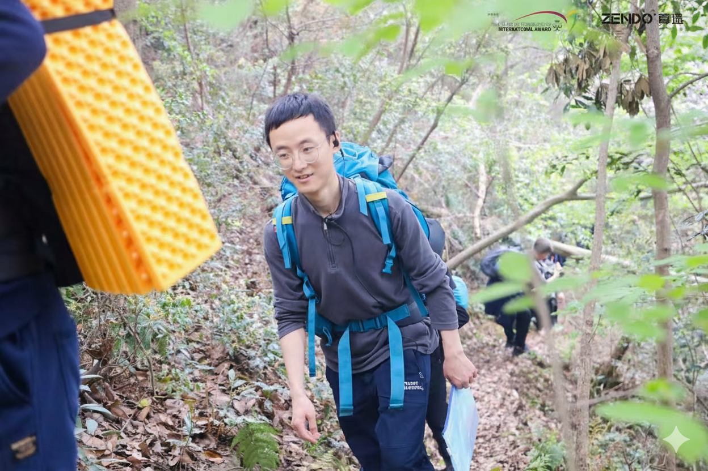

研究
|
我的博士研究计划建立在我在机制设计方面的经验和对人类认知的反思之上。我打算专注于大型模型的两种主要能力：
1. 构建统一语义空间：我的第一个目标是研究如何有效地将不同的信息映射到统一的、可解释的潜在空间中。这超越了跨模态映射——它是逻辑推理的基础。我相信，高效的跨模态语义对齐是迈向能够全面理解世界的基模型的第一步。
2. 实现潜在空间中的结构化推理：在实现语义对齐后，我的下一个目标是在这个统一的潜在空间内设计结构化的、类似思维链的推理轨迹。我希望模型不仅能够产生答案，还能够呈现可分解和可追踪的推理过程。
|
教育
 |
华东师范大学 (985工程)
2021年9月 – 2024年6月
计算机科学与技术硕士
GPA: 3.77/4.00 (前5%); 推荐免试入学。
|
|
东华大学 (211工程)
2017年9月 – 2021年6月
计算机科学与技术学士
GPA: 4.01/4.30; 排名: 2/180; 优秀毕业生。
|
|
普渡大学西北分校
2019年8月 – 2020年8月
交换生 & 研究助理
GPA: 3.90/4.00; 获得全额CSC奖学金; 圣母大学数据黑客马拉松第一名。
|
兴趣
🎤 朗诵 | 🥌 冰壶 | 🏞️ 户外活动 | 🧘 冥想 | 📚 阅读 | 🛠️ 探索新工具链
阅读清单
列表中的每一行都包含日期、书名和作者。末尾的星号(*)表示重要书籍。
不在微信读书上阅读的书籍无法追溯时间。在2023年中经历连续投稿失败后，我内心的困惑和无助爆发了，我开始阅读大量灵性书籍，寻求个人生活的整合。近年来，我在个人心态上取得了突破。如果我们只知道太多知识，我们就无法过好这一生。所以在克服内心摩擦后，我读的书少了。
未注明日期的书籍（主要是大学及以前）
- 力量、魔法、英雄 (The Power, The Magic, Hero) (by Rhonda Byrne)
- ⭐ 九阳剑圣 (Nine Yang Sword Saint)
- 超神机械师 (The Legendary Mechanic)
- ⭐ 三体 (The Three-Body Problem)
- 长生帝子 (Longevity Emperor's Son)
- 修真界败类 (Scum of the Cultivation World)
- 活法 (Ikigai)
- 黎明之剑 (Sword of Dawn)
- 毛泽东选集 (Selected Works of Mao Zedong)
- 炁体源流 (The Origin of Qi)
- ⭐ 深奥的简洁 (Profound Simplicity)
- ⭐ 什么是技术 (The Question Concerning Technology)
- 小逻辑 (The Shorter Logic)
- ⭐ 禅海蠡测 (Measuring the Ocean of Zen with a Conch)
- ⭐ 爵迹 (L.O.R.D: Legend of Ravaging Dynasties)
- 小时代（I-IV）(Tiny Times)
- 神印王座 (Throne of Seal)
阅读历程
2025
- ⭐ 2025/4 秘密 (The Secret) (第二次阅读)
2024
- ⭐ 2024/10 被讨厌的勇气 (The Courage to Be Disliked)
- 2024/9 谁说我不可以 (Who Says I Can't)
- ⭐ 2024/8 西西弗神话 (The Myth of Sisyphus) by Albert Camus
- ⭐ 2024/2 当下的力量 (The Power of Now) by Eckhart Tolle
- ⭐ 2024/1 修行明理手册 (Manual for Practice and Understanding Truth)
- 2024/1 快乐终极指南 (The Ultimate Guide to Happiness)
- 2024/1 零极限 (Zero Limits)
2023
- 2023/12 佛道一如道德经修订本 (Buddhism and Taoism as One: Revised Tao Te Ching)
- 2023/9 不羁的灵魂 (The Untethered Soul)
- 2023/9 精力管理 (The Power of Full Engagement)
- 2023/9 圆觉经略说 (Sutra of Perfect Enlightenment Explained) by Nan Huai-Chin
- 2023/6 无门关 (The Gateless Gate)
- 2023/6 佛法与义理 (The Dharma and Principles) by Nan Huai-Chin
- 2023/6 禅海蠡测（语译）(Measuring the Ocean of Zen with a Conch - annotated)
- 2023/3 维摩诘的花雨漫天 (Vimalakirti's Flower Rain) by Nan Huai-Chin
- 2023/3 内向者优势 (The Introvert Advantage)
2022
- ⭐ 2022/11 大手印浅释 (A Brief Explanation of Mahamudra) by Master Yuanyin
- 2022/11 定慧初修 (Initial Practice of Samatha-Vipassana)
- 2022/11 瑜伽师地论·声闻地讲录 (Lectures on the Yogacarabhumi-sastra)
- 2022/11 人生的起点和终点 (The Start and End of Life)
- 2022/10 宗镜录略讲 (Brief Lectures on the Zongjing Lu)
- 2022/10 药师经的济世观 (The World-Saving View of the Medicine Buddha Sutra)
- 2022/10 答问青壮年参禅者 (Answering Young Chan Practitioners)
- 2022/10 禅与生命的认知初讲 (Introduction to Zen and the Cognition of Life)
- 2022/10 静坐修道与长生不老 (Meditation and Immortality)
- 2022/10 如何修正佛法 (How to Cultivate Buddhist Dharma)
- 2022/6 大唐兴亡三百年 (Three Hundred Years of the Rise and Fall of the Tang Dynasty)
- 2022/5 生命进化的跃升 (The Leap of Life's Evolution)
- 2022/5 中国·政道 (China's Political Way)
- ⭐ 2022/2 大奉打更人 (Guardians of the Dafeng)
- 2022/1 窃明 (Qie Ming)
2021
- 2021/12 津巴多口述史 (The Zimbardo Oral History)
- 2021/4 修真四万年 (Forty Millenniums of Cultivation)
- 2021/4 一句顶一万句 (One Sentence is Worth Ten Thousand)
- 2021/4 断舍离 (Dan-sha-ri)
- ⭐ 2021/3 诡秘之主 (Lord of Mysteries) by 爱潜水的乌贼
- 2021/3 重口味心理学 (Provocative Psychology)
- 2021/2 孺子帝 (The Child Emperor)
- 2021/2 大秦帝国(12册) (The Great Qin Empire series)
2020
- 2020/12 五万年中国史 (Fifty Thousand Years of Chinese History)
- 2020/11 书剑恩仇录 (The Book and the Sword) by Jin Yong
- 2020/11 牛奶可乐经济学 (Milk and Cola Economics)
- 2020/9 道林格雷的画像 (The Picture of Dorian Gray)
- 2020/9 让成长带你穿透迷茫 (Let Growth Guide You Through Confusion) by Yu Minhong
- 2020/9 愿你的青春不负梦想 (May Your Youth Live Up to Your Dreams) by Yu Minhong
- 2020/8 天行健 (Tian Xing Jian)
- 2020/8 鹿鼎记 (The Deer and the Cauldron)
- 2020/8 大明亡国史：崇祯皇帝传 (History of the Ming Dynasty's Fall: Biography of Emperor Chongzhen)
- 2020/7 堂吉诃德 (Don Quixote)
- 2020/6 百年孤独 (One Hundred Years of Solitude)
- ⭐ 2020/6 亵渎 (Blasphemy)
- 2020/6 生活是很好玩的 (Life is Fun)
- 2020/6 世间所有相遇都是久别重逢 (All Encounters in the World Are Reunions After a Long Separation)
- 2020/6 鼠疫 (The Plague) by Albert Camus
- 2020/6 海奥华预言 (The Thiaoouba Prophecy)
- ⭐ 2020/5 活着 (To Live)
- 2020/5 罗生门 (Rashomon)
- ⭐ 2020/5 局外人 (The Stranger) by Albert Camus
- 2020/5 别笑，这是大清正史 (Don't Laugh, This is the Official History of the Qing Dynasty)
- 2020/5 高情商聊天术 (The Art of High EQ Chat)
- 2020/5 三重门 (Triple Door)
- 2020/5 过得刚好 (Just Right)
- 2020/4 雪中悍刀行 (Sword Snow Stride)
- 2020/2 与神合一 (Communion with God)
- 2020/2 与神为友 (Friendship with God)
- ⭐ 2020/2 与神对话I-III (Conversations with God)
- 2020/1 娱乐至死 (Amusing Ourselves to Death)
- ⭐ 2020/1 非暴力沟通 (Nonviolent Communication)
2019
- 2019/12 知行合一王阳明 (Unity of Knowledge and Action: Wang Yangming)
- 2019/9 如何有效阅读一本书 (How to Read a Book Effectively)
- 2019/9 微习惯 (Mini Habits)
- ⭐ 2019/5 干法 (A Passion for Success) by 稻盛和夫
画廊
千岛湖骑行
青海湖骑行

徒步
|